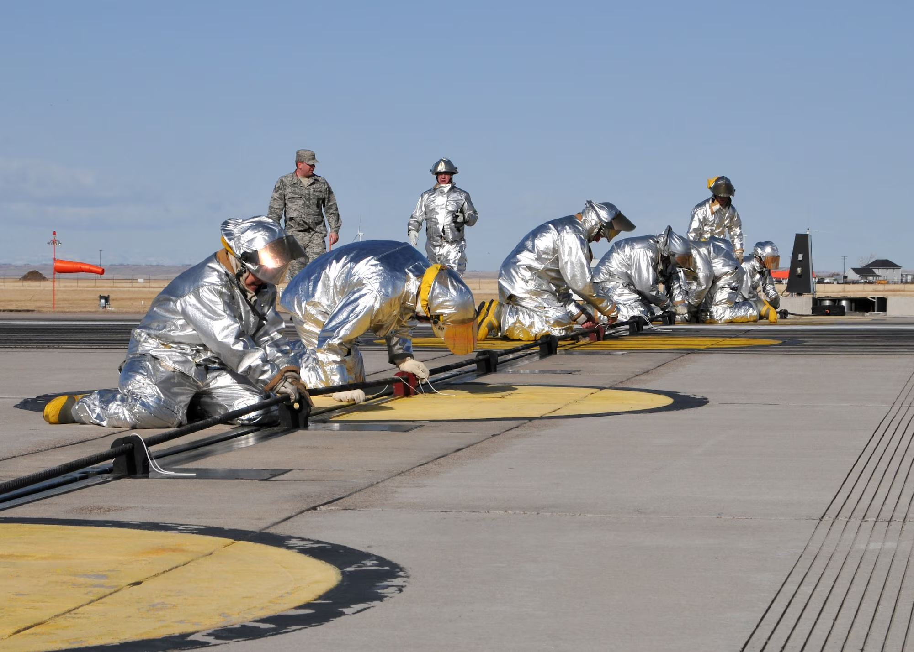

Critical Safety Infrastructure
Aircraft arresting systems represent critical safety infrastructure at military airfields worldwide, providing pilots with reliable emergency stopping capability.
Aircraft arresting systems represent critical safety infrastructure at military airfields worldwide, providing pilots with reliable emergency stopping capability. This comprehensive overview examines the four primary systems in use today: the BAK-12, BAK-14, BAK-15, and Type H, detailing their specifications, operational characteristics, and applications.
These sophisticated systems combine mechanical precision, hydraulic power, and electronic control to transform potentially catastrophic situations into controlled stops. Each component plays a vital role in the split-second sequence that brings aircraft to a safe halt during emergencies.

BAK-12 Energy Absorber System
The standard USAF aircraft arresting system since 1962

The BAK-12 stands as the standard USAF aircraft arresting system, having proven its reliability and effectiveness since its introduction in 1962. This system consists of two hydraulically actuated rotary friction energy absorbers, positioned on each side of the runway and connected by a cross-runway hook cable or net barrier.
Technical Specifications
- Energy Capacity: Designed to safely stop fighter aircraft at speeds up to 180 knots
- Runout Distance: Typically 950 feet (290 meters) or 1,200 feet (370 meters) depending on configuration
- Brake System: Two four-rotor hydraulic brakes (modified B-52 brakes)
- Static Pressure: 175 pounds per square inch maintained on brakes
- Tape Storage Reel: Originally 60-inch purchase-tape storage reel, later improved for heavier aircraft
- Installation Options: Can be installed on concrete pads above or below grade, in pits, or trailer-mounted
The BAK-12 employs a sophisticated braking mechanism. When an aircraft's arresting hook engages the cable, the system initially resists with static pressure. As the pull exceeds this threshold, an integral hydraulic pump activates. The genius of the design appears during deceleration - as the aircraft slows, the reels turn more slowly, automatically reducing hydraulic pressure on the brakes to prevent a dangerous "slingshot effect" at the end of the runout.
Maintenance requirements for the BAK-12 are stringent but necessary. The Air Force mandates that these systems must be overhauled or replaced every 10 years or 500 engagements, whichever comes first. After each use, maintenance crews must inspect the nylon tape and rewind it onto storage reels, then reposition and secure the cable at the runway's approach end.
BAK-14 Retractable Hook Cable System
Bidirectional hook cable support for BAK-12 energy absorbers
The BAK-14 represents an evolution in aircraft arresting technology, designed to complement the BAK-12 energy absorbers while addressing the operational challenges of permanent runway installations.
Technical Specifications
- Configuration: Bidirectional hook cable (pendant) support system
- Compatibility: Used in conjunction with BAK-12 or comparable energy absorbers
- Key Feature: Retractable below runway surface when not in use
- Operation: Electro-hydraulic or pneumatic actuation
- Cable Diameter: Typically 1.25-inch steel cable
The primary advantage of the BAK-14 system lies in its retractability. When not needed, the entire cable assembly can be lowered below the runway surface, allowing normal operations without risk to taxiing aircraft or the runway itself. This feature is particularly valuable at joint-use facilities where both military and civilian aircraft share runways.
Installation typically involves creating a channel across the runway with specialized support structures that allow the cable to rise to the proper height when activated. The system can be controlled remotely from the tower, allowing rapid deployment when emergency situations arise without requiring ground crew intervention.

BAK-15 Net Barrier System
Unidirectional nylon net barrier for aircraft without tail hooks

The BAK-15 aircraft arresting barrier provides a different approach to emergency aircraft recovery, primarily designed for aircraft without tail hooks or as a redundancy system for hook-equipped aircraft.
Technical Specifications
- Configuration: Unidirectional nylon net barrier
- Support Structure: Electro-hydraulically powered steel masts
- Deployment: Remote-controlled movement
- Location: Typically installed in the overrun area of the runway
- Primary Use: Emergency recovery of fighter aircraft without tail hooks
Unlike the BAK-12/14 systems that rely on an aircraft's arresting hook, the BAK-15 employs a physical net barrier that engages the aircraft's landing gear or airframe. This makes it particularly valuable for recovering aircraft that have lost their arresting hooks or for training aircraft not equipped with hooks.
The system features rapid deployment capability through its electro-hydraulic actuation system, allowing controllers to raise the barrier quickly when needed. When not in use, the barrier stows to the side of the runway, maintaining clear approach and departure paths.
Type H Cable Retraction System
Alternative approach to retractable hook cable technology
The Type H system represents another approach to retractable hook cable technology, serving as an alternative or complement to the BAK-14 in many installations.
Technical Specifications
- Function: Engaging device only (requires separate energy absorbers)
- Configuration: Retractable hook cable system
- Operation: Allows pendant cable to be retracted below runway surface
- Compatibility: Designed to work with BAK-12 or similar energy absorbers
- Control: Remote operation from control tower
Like the BAK-14, the Type H system's primary advantage is its ability to keep the arresting cable below the runway surface during normal operations. This prevents damage to the cable, taxiing aircraft, and the runway itself. The system is particularly valuable at airfields with high traffic volumes or mixed civilian/military operations.
The Type H differs from the BAK-14 in specific design elements and operational characteristics, though both serve the same fundamental purpose. Installation specifications vary based on runway construction, local environmental factors, and the types of aircraft being supported.
Mobile Aircraft Arresting Systems (MAAS)
Portable BAK-12 technology for expeditionary operations
Beyond the fixed installations described above, Mobile Aircraft Arresting Systems (MAAS) provide critical flexibility for expeditionary operations. These systems typically utilize BAK-12 technology in a portable configuration.
Technical Specifications
- Components: Pair of mobile units, each with a BAK-12 arresting barrier on a trailer
- Deployment Time: As little as 2 hours in unidirectional configuration
- Cable Options: 90-foot or 153-foot configurations
- Runout Distance: 990 feet or 1,200 feet respectively
- Transport: Air transportable for rapid global deployment
MAAS units were originally developed to recover fighter aircraft returning to battle-damaged airfields but have found broader applications in expeditionary operations. Each trailer contains a complete BAK-12-based arresting system and all tools and hardware necessary for installation, making them self-sufficient units that can be rapidly deployed worldwide.
Integration and Control Systems
Digital monitoring and control technologies for modern arresting systems
Modern aircraft arresting systems increasingly rely on sophisticated control and monitoring technologies. Motorola's ACE3600-powered Phoenix Aircraft Arresting Control System (PAACS) represents the current standard for USAF installations, providing digital control, monitoring, and data logging capabilities.
These control systems allow for:
- Remote operation from the control tower
- Real-time monitoring of system status
- Automatic data logging for maintenance and incident investigation
- Integration with base-wide safety and communication networks
- Enhanced security through encrypted communications
The evolution of these control systems has significantly improved both the reliability and operational flexibility of aircraft arresting technology, ensuring these critical safety systems remain ready when needed most.
Learn About Motorola Integration
System Comparison
Key differences between major aircraft arresting technologies
| Feature | BAK-12 | BAK-14 | BAK-15 | Type H | MAAS |
|---|---|---|---|---|---|
| Primary Function | Energy Absorption | Cable Support | Net Barrier | Cable Support | Mobile Energy Absorption |
| Retractability | No | Yes | Yes (Stowable) | Yes | No (Removable) |
| Directionality | Bidirectional | Bidirectional | Unidirectional | Bidirectional | Configurable |
| Aircraft Hook Required | Yes | Yes | No | Yes | Yes |
| Max Aircraft Speed | 180 knots | N/A (uses BAK-12) | 150 knots | N/A (uses BAK-12) | 180 knots |
| Typical Runout | 950-1,200 feet | N/A (uses BAK-12) | Variable | N/A (uses BAK-12) | 990-1,200 feet |
| Primary Application | Standard Installation | Joint-Use Facilities | Hookless Aircraft | Joint-Use Facilities | Expeditionary Operations |
Technical References
Sources and further reading on aircraft arresting systems
- Federal Aviation Administration, "Advisory Circular 150/5220-9B, Aircraft Arresting Systems on Civil Airports," July 10, 2023
- Department of Defense, "FC 3-260-18F Air Force Aircraft Arresting Systems (AAS) Installation," October 28, 2015
- The Mobility Forum, "Chain Reaction: The Barrier Between Life and Death," September 2, 2021
- Curtiss-Wright EMS, "Cable Arresting Systems"
- ATECH Inc., "Arresting Systems"
- U.S. Air Force, "Arresting system stops aircraft safely," April 4, 2006
Expert Support and Integration
As an authorized Motorola SCADA integrator with decades of experience, Global Data Specialists provides comprehensive support for aircraft arresting control systems.
Contact Global Data Specialists